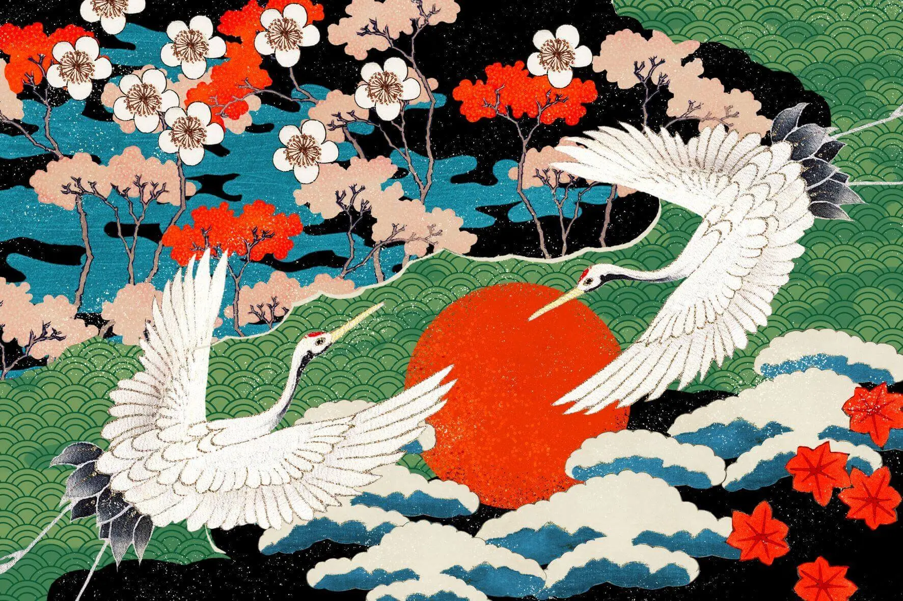
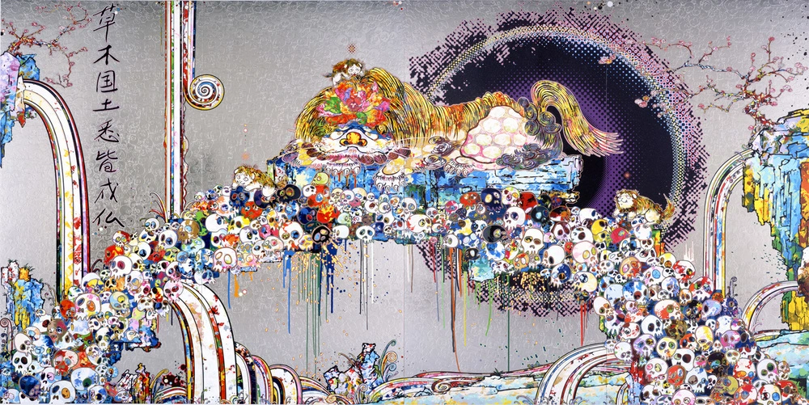

Japanese Culture
Japanese culture is rich and diverse, with traditions spanning thousands of years. From ancient customs to modern innovations, Japan offers a unique blend of old and new. The culture is deeply rooted in respect, harmony, and discipline, influencing various aspects of life, including art, cuisine, fashion, and social interactions.
 Traditional Arts
Japan is renowned for its traditional arts such as tea ceremony, ikebana (flower arranging), and calligraphy. The tea ceremony, known as "chanoyu," is a ritualistic preparation and presentation of matcha tea, emphasizing aesthetics, simplicity, and mindfulness. Ikebana, the art of flower arranging, focuses on harmony, balance, and minimalism, reflecting the beauty of nature in a disciplined form. Calligraphy, or "shodo," involves the artistic writing of Japanese characters, requiring precision, patience, and a deep connection to the written word.